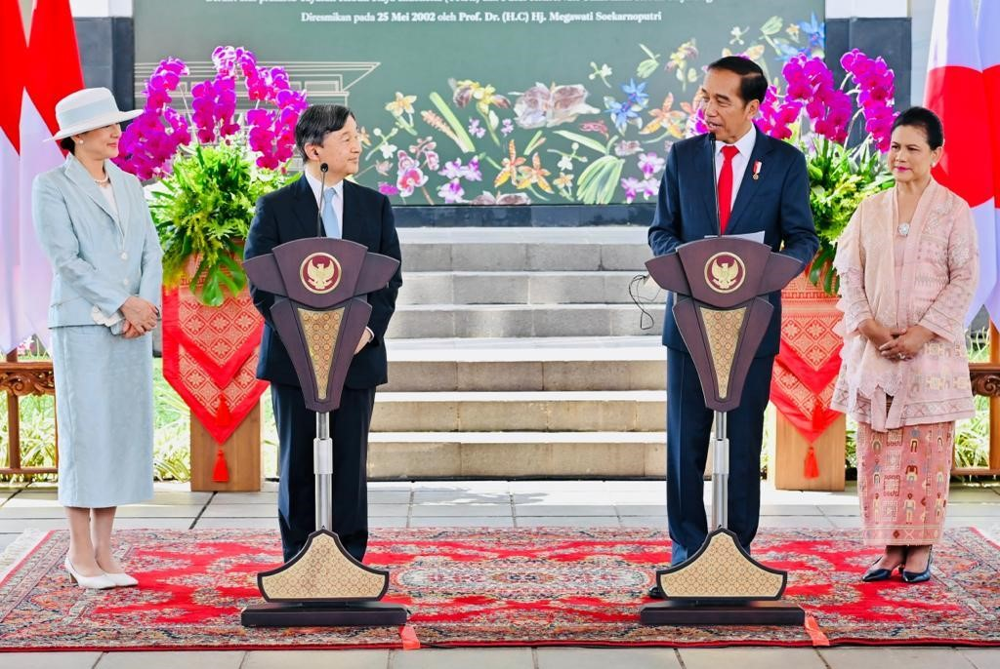
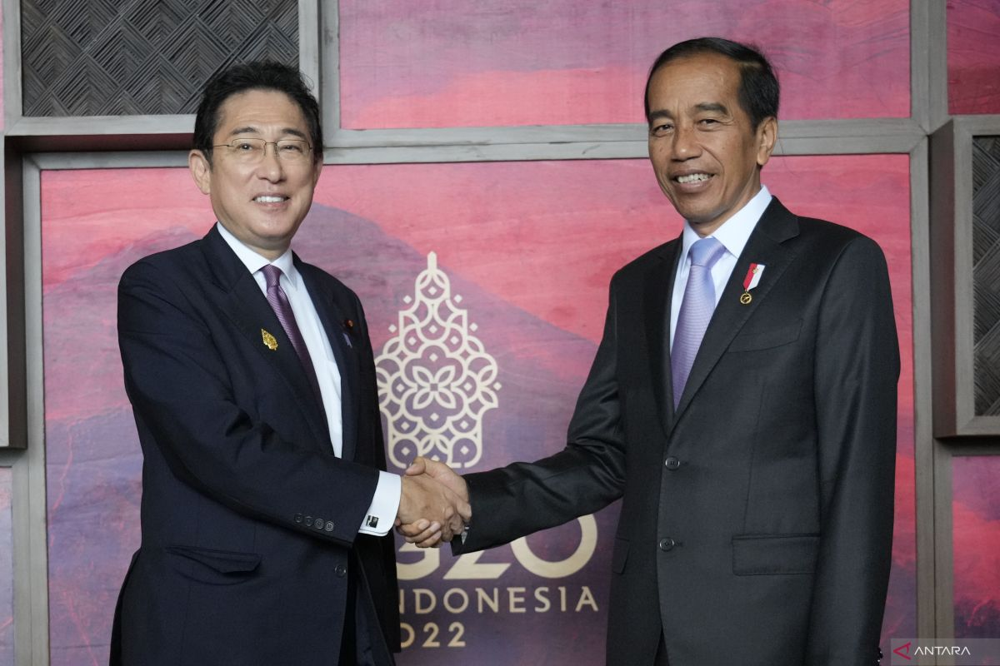

 
Multilateral dalam konteks hubungan antara Indonesia dan Jepang mengacu pada keterlibatan kedua negara dalam kerja sama internasional yang melibatkan banyak pihak atau negara melalui organisasi atau forum global dan regional.Indonesia dan Jepang aktif dalam berbagai forum multilateral, seperti Perserikatan Bangsa-Bangsa, APEC (Asia-Pacific Economic Cooperation), dan ASEAN. Dalam forum-forum ini, kedua negara bekerja sama untuk menangani isu-isu global, seperti perubahan iklim, perdagangan internasional, keamanan maritim, pengentasan kemiskinan, dan pembangunan berkelanjutan.Melalui kerja sama multilateral ini, Indonesia dan Jepang tidak hanya memperkuat posisi masing-masing di tingkat global, tetapi juga berkontribusi pada stabilitas dan kemakmuran kawasan Asia-Pasifik.
1. Kerja Sama melalui G20 Sebagai anggota G20, Indonesia dan Jepang bekerja sama dalam isu-isu global seperti pemulihan ekonomi pasca-pandemi, transisi energi berkelanjutan, serta penguatan sistem kesehatan dunia. Dalam Presidensi G20 Indonesia 2022, Jepang mendukung berbagai agenda, termasuk pendanaan untuk transisi energi dan pembangunan hijau di negara berkembang.
2. Kerja Sama di PBB Dalam kerangka PBB, Indonesia dan Jepang sama-sama mendukung agenda pembangunan berkelanjutan (Sustainable Development Goals). Keduanya sering berkolaborasi dalam misi perdamaian dunia, seperti pengiriman pasukan penjaga perdamaian di kawasan konflik.
3.Kerja Sama Mitigasi Bencana melalui ARF Dalam ASEAN Regional Forum (ARF), Indonesia dan Jepang memprakarsai kerja sama mitigasi bencana, termasuk pelatihan bersama untuk menghadapi bencana alam. Jepang sering memberikan bantuan teknologi dan pelatihan terkait penanganan tsunami di Indonesia.